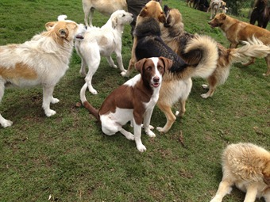

Conoce más acerca de nosotros
 Nuestra fundación Patitas de corazón inició en el año 2010, le abrió las puertas a todos aquellas mascotas abandonadas o maltratadas. La nuestra es una organización sin ánimo de lucro en donde se quiere minimizar al máximo el maltrato de perros y gatos, su sobrepoblación y con la meta de poder conseguirle a cada uno de ellos un hogar que les brinde todo ese cariño y cuidados que ellos necesitan. Queremos ofrecerles a todos estas grandiosas mascotas un hogar temporal, en donde se les daran los mayores cuidados, su comida, teniendo un control adecuado de algunos comportamientos de ellos, es decir llevando de la mejor manera su rehabilitación y asi mismo facilitar o encontrarles una nueva familia que quiera adoptaros comprometiendose con aquella mascota que eligieron como un integrante más.
Misión
Rescatar y disminuir la cantidad de perros y gatos abandonados o maltratados en las calles o pos sus dueños. Queremos alegrar las vidas de estos animalitos, encontrandoles un hogar que les brinde todo el cariño y afecto que se merecen.